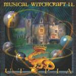

| Artist: | Musical Witchcraft II |
| Title: | Utopia |
| Label: | Periferic BGCD 116 |
| Length(s): | 47 minutes |
| Year(s) of release: | 2002 |
| Month of review: | [04/2003] |
| 1) | Suite Utopia - Utopia | 3.33 |
| 2) | Suite Utopia - Prophets And Daydreamers | 6.42 |
| 1) | Suite Utopia - Worlds Closed Into The Stone | 4.25 |
| 4) | Suite Utopia - The Light Of The Stake's Fire | 5.13 |
| 5) | In The Hiding Place Of Castles | 2.51 |
| 6) | Secrets Of Morus | 3.52 |
| 7) | Feast On The Tournament | 2.23 |
| 8) | Inquisition | 4.44 |
| 9) | The Tower's Room Lost In The Fog... | 4.57 |
| 10) | Utopia From The City | 5.07 |
| 11) | Fairy Tale Along The Loire | 3.32 |